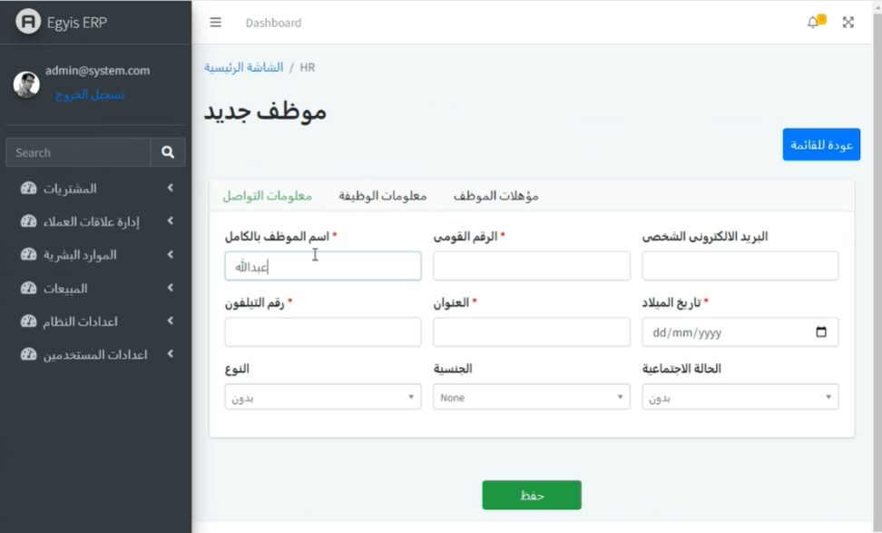

انواع مستخدمي شاشة شيت المتابعة
إنشاء موظف ومستخدم خدمة عملاء :
نقوم اولا بفتح قائمة الموظفين كالتالي :
ثم بعد الضغط على إضافة موظف جديد ستظهر الشاشة التالية :
ثم نقوم بادخال بيانات الموظف المراد :
ثم بعد الانتهاء نقوم بنقر زر حفظ
ثم بعد ذلك نقوم بإضافة مستخدم كالاتي :

وعند الانتهاء ننقر زر حفظ
إنشاء موظف السيلز :
نقوم أولاً بفتح قائمة الموظفين كالتالي :

ثم بعد الضغط على اضافة موظف ننتقل للشاشة التالية :
ثم بعد الانتهاء من ادخال البيانات المطلوبة ننقر زر حفظ
ثم بعد ذلك نقوم بإضافة مستخدم كالاتي :
مع مراعاة اختيار الصلاحية المناسبة للموظف
وبعد الانتهاء ننقر زر حفظ
ثم نقوم باضافة بائع جديد مع مراعاة اختيار الموظف كالاتي :
ثم بعد ذلك ننقر زر حفظ
اضافة مشرف مبيعات :
نقوم اولا بفتح قائمة الموظفين كالتالي :

ثم بعد الضغط علي اضافة موظف ننتقل للشاشة التالية :
ثم بعد الانتهاء ننقر زر حفظ
ثم بعد ذلك نقوم بإضافة مستخدم مع مراعاة اختيار صلاحية المشرف كالاتي :
ثم بعد الانتهاء ننقر زر حفظ
ثم نقوم باضافة بائع جديد مع مراعاة اختيار الموظف كالاتي :
ثم بعد الانتهاء ننقر زر حفظ